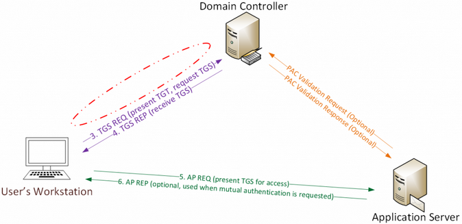

Over the past few months, I researched how SID History can be abused in modern enterprises. As part of this research, I reached out to Benjamin Delpy, author of Mimkatz, and requested he add “SID History” to Mimikatz forged Kerberos tickets. The June 28th version of Mimikatz now includes the capability to include arbitrary SIDs in SID History on forged tickets.
SID History is a legacy feature that enables reach-back across Active Directory trusts. This functionality was put in place when Active Directory was first released to support migration scenarios. When a user is authenticated, the SIDs of every security group the user is a member of is added to the user’s Kerberos ticket, as well as any SIDs in the user’s SID History. Since SID History is meant to work across trusts, it provides cross-trust “impersonation”.
Before we dig into this further, let’s recap what Golden Tickets are and how they work.
Golden Tickets
Golden Tickets are forged Ticket-Granting Tickets (TGTs), also called authentication tickets.
As shown in the following graphic, there is no AS-REQ or AS-REP (steps 1 & 2) communication with the Domain Controller. Since a Golden Ticket is a forged TGT, it is sent to the Domain Controller as part of the TGS-REQ to get a service ticket.

The Kerberos Golden Ticket is a valid TGT Kerberos ticket since it is encrypted/signed by the domain Kerberos account (KRBTGT). The TGT is only used to prove to the KDC service on the Domain Controller that the user was authenticated by another Domain Controller. The fact that the TGT is encrypted by the KRBTGT password hash and can be decrypted by any KDC service in the domain proves it is valid (along with PAC validation, but that’s another story  ).
).
Golden Ticket Requirements:
* Domain Name [AD PowerShell module: (Get-ADDomain).DNSRoot]
* Domain SID [AD PowerShell module: (Get-ADDomain).DomainSID.Value]
* Domain KRBTGT Account NTLM password hash
* UserID for impersonation.
Once an attacker has admin access to a Domain Controller, the KRBTGT account password hashes can be extracted using Mimikatz.
sekurlsa::krbtgt